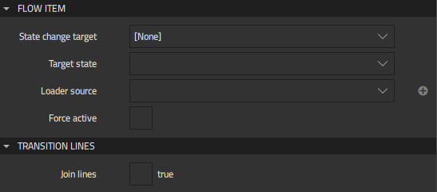

Applying States in Flows
You can use states in flows to modify the appearance of components in flow items in response to user interaction, for example. For this purpose, you use the Flow Item components available in Components > Flow View.
- Select File > New File > Qt Quick Files > Flow Item to create a flow item.
- In States, add states to the flow item.
- Open the .ui.qml file that contains the flow view in the 2D view and drag the flow item to the flow view in the Navigator or 2D view.
- Drag an empty Flow Item component from Components > Flow View to the flow for each state that you added.
- In Properties, in the State change target field, select the flow item that you created using the wizard.

- In the Target state field, select the state to apply to the flow item.
You can now add action areas and flow decisions to apply the different states.